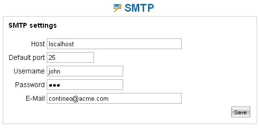

Customize smtp |
The system offers the possibility to send documents via email.
Such functionality essentially allows to generate a mail to specific addresses containing in it the selected document.
For being able to take advantage of such functionality it is indispensable to set up an smtp server
(mail server) on the system.
Access therefore the configuration mask using the main menu path: Administration --> E-Mails --> smtp.

In order to verify the correct configuration it is wise to verify the correct post of a document via email.